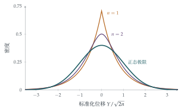

STEP III 2008，第 12 题
继续之前，请先阅读题目（原题为英文）。题目载于 STEP Support Programme 的题目资料库： step.maths.org/questions/08-s3-q12
引子
把许多微小而独立的随机效应加起来，不论每一个效应本身服从甚么分布，总和都会服从钟形的正态曲线。这就是中心极限定理（central limit theorem），它也许是概率论中最重要的定理。它解释了为何身高、量度误差和考试分数都大致服从正态分布（normal distribution），也解释了为何统计学家即使对背后的分布一无所知，仍能说出一个平均值有多可靠，只要该分布的方差（variance）有限便可（试与 第 12.22 节 比较）。
本题在一个特殊情况下证明这个定理。一只青蛙随机跳跃，每次跳跃服从双边指数分布（two-sided exponential distribution），其密度函数（density）有一个尖峰，完全不像钟形。跳了许多次之后，牠的总位移却服从正态分布。所用的工具是矩母函数（moment generating function），它把独立变量之和化为乘积，再取对数，又把乘积化为和。
矩母函数已于 2019 年从 STEP 考试大纲中删除。随机变量（random variable）\(X\) 的矩母函数是 \(\mathrm{M}_X(\theta) = \mathrm{E}(e^{\theta X})\)。它在 \(0\) 处的各阶导数给出各阶矩（moments）：\(\mathrm{M}'(0) = \mathrm{E}(X)\)，\(\mathrm{M}''(0) = \mathrm{E}(X^2)\)。若 \(X\) 与 \(Y\) 独立（independent），则 \(\mathrm{M}_{X+Y} = \mathrm{M}_X\mathrm{M}_Y\)，而且 \(\mathrm{M}_{cX}(\theta) = \mathrm{M}_X(c\theta)\)。若矩母函数收敛，则（在适当的意义下）分布也收敛。
动笔之前
密度函数 \(\frac12e^{-|x|}\) 是对称的。它的图像是甚么样子？它的平均值（mean）是多少？
它是一条帐篷形的曲线，在 \(0\) 处有一个高度为 \(\frac12\) 的尖峰，并向两边按指数衰减（图 12.24.1）。由对称性可知平均值为 \(0\)。
逐步解题
阶段 1 矩母函数
当 \(|\theta| < 1\) 时，把积分在 \(0\) 处分开， \[\mathrm{M}_X(\theta) = \frac12\int_{-\infty}^0e^{(1 + \theta)x}\,\mathrm{d}x + \frac12\int_0^\infty e^{-(1 - \theta)x}\,\mathrm{d}x = \frac12\Bigl(\frac{1}{1 + \theta} + \frac{1}{1 - \theta}\Bigr) = \frac{1}{1 - \theta^2}. \qed\] 展开得 \(\mathrm{M}_X(\theta) = 1 + \theta^2 + \theta^4 + \cdots\)，所以 \(\mathrm{E}(X) = 0\)，\(\mathrm{E}(X^2) = 2\)（即 \(\frac{\theta^2}{2!}\) 的系数）。方差为 \(2\)。
阶段 2 青蛙的位移
\(Y = X_1 + \cdots + X_n\) 的矩母函数是甚么？\(Y/\sqrt{2n}\) 的又是甚么？
由独立性得 \(\mathrm{M}_Y(\theta) = (1 - \theta^2)^{-n}\)，再作缩放， \[\mathrm{M}_{Y/\sqrt{2n}}(\theta) = \mathrm{M}_Y\Bigl(\frac{\theta}{\sqrt{2n}}\Bigr) = \Bigl(1 - \frac{\theta^2}{2n}\Bigr)^{-n}.\] （除以 \(Y\) 的标准差（standard deviation）\(\sqrt{2n}\) 作缩放，令方差变为 \(1\)。）
阶段 3 极限
取对数，并利用当 \(u\) 很小时 \(\ln(1 - u) \approx -u\)。
\(\ln\mathrm{M}_{Y/\sqrt{2n}}(\theta) = -n\ln\bigl(1 - \frac{\theta^2}{2n}\bigr) = -n\bigl(-\frac{\theta^2}{2n} - \frac{\theta^4}{8n^2} - \cdots\bigr) \to \frac{\theta^2}{2}\)，所以 \[\mathrm{M}_{Y/\sqrt{2n}}(\theta) \to e^{\theta^2/2}, \qed\] 这正是标准正态分布的矩母函数。
阶段 4 青蛙的机会
当 \(n\) 很大时，\(Y\) 近似服从 \(\mathrm{N}(0, 2n)\)。何时有 \(\mathrm{P}(|Y| \geq 25) = 0.05\)？
对于标准正态变量 \(Z\)，\(\mathrm{P}(|Z| \geq 1.96) = 0.05\)。因此我们需要 \(\frac{25}{\sqrt{2n}} = 1.96\)，由此得 \(2n = \bigl(\frac{25}{1.96}\bigr)^2 \approx 162.7\)，即 \(n \approx 81.3\)。由于落在远处的机会随 \(n\) 增大而增加，要有至少 \(5\%\) 的机会，最少的跳跃次数约为 \(82\)。■

回顾
变换把和化为乘积。独立变量之和的矩母函数，等于各变量矩母函数的乘积。
对数把乘积化为和。\(\ln\bigl(1 - \frac{\theta^2}{2n}\bigr)^{-n}\) 变成了一个和，其极限很容易求得。
标准化（standardise）。除以标准差 \(\sqrt{2n}\) 令方差保持为 \(1\)，所以极限既不是 \(0\)，也不是无穷大。
背后的数学
一般的定理
同样的论证适用于任何平均值为 \(0\)、方差 \(\sigma^2\) 有限的分布（还须有矩母函数，不过这个条件可以避开）。这时 \(\mathrm{M}(\theta) = 1 + \frac12\sigma^2\theta^2 + o(\theta^2)\)，而且 \[\Bigl(\mathrm{M}\Bigl(\frac{\theta}{\sigma\sqrt n}\Bigr)\Bigr)^n = \Bigl(1 + \frac{\theta^2}{2n} + o\Bigl(\frac1n\Bigr)\Bigr)^n \to e^{\theta^2/2}.\] 取极限之后只有方差留下来：原来分布的形状已被遗忘。这就是正态分布具有普遍性的原因。在大学里，这个定理是用特征函数（characteristic function）\(\mathrm{E}(e^{i\theta X})\) 来证明的，特征函数必定存在，而分布的收敛则由莱维连续性定理（Lévy’s continuity theorem）赋予严格的意义。
有多快？
中心极限定理说明极限情况下会发生甚么，却没有说明收敛得有多快。Berry–Esseen 定理（Berry–Esseen theorem）给出误差的上界：一个常数乘以 \(\frac{\mathrm{E}|X|^3}{\sigma^3\sqrt n}\)。对于像青蛙跳跃那样的对称分布，跳了几十次之后近似已相当准确。对于偏态（skewed）分布，或者在极端的尾部，即使 \(n\) 很大，近似也可能很差：正态近似会低估极罕见事件发生的机会，这个事实对保险和金融都有影响。
棣美弗（De Moivre）在 1733 年发现了二项分布（binomial distribution）的正态近似（第 12.23 节），拉普拉斯在 1810 年把它推广至更一般的变量之和，并首先提出量度误差是许多微小效应之和这个想法。严格的证明要到很久之后才出现：李亚普诺夫（Aleksandr Lyapunov）在 1901 年给出证明，Jarl Lindeberg 则在 1922 年给出证明，并找到了基本上是令定理成立的最弱条件。“中心极限定理”这个名称是波利亚（George Pólya）在 1920 年起的，意思是这个定理在概率论中处于中心地位。
思维技巧
一个困难的运算（把独立随机变量相加，即对它们的密度函数作卷积（convolution）），经过变换之后变成一个容易的运算（乘法）。在那里完成工作，然后诠释所得的结果。
同样的策略也是生成函数（generating functions）（第 9.4 节）、分析学和工程学中的傅里叶（Fourier）变换和拉普拉斯变换，以及把乘法化为加法的对数背后的原理。
延伸练习
两次跳跃的精确结果。证明 \(Y = X_1 + X_2\) 的密度函数为 \(\frac14(1 + |y|)e^{-|y|}\)，并验证其方差为 \(4\)。
从二项到正态。设 \(X \sim \mathrm{B}(1, \frac12)\)，并把它平移使平均值为 \(0\)（即取值 \(\pm\frac12\)），求出 \(\mathrm{M}_X(\theta) = \cosh\frac\theta2\)，并证明 \(n\) 个这样的变量的标准化和的矩母函数趋向 \(e^{\theta^2/2}\)。
青蛙的精确结果。利用电脑（或以 \(n = 2\) 时的精确密度函数作检验），看看当 \(n = 82\) 时正态近似有多准确。
为何柯西不行？柯西分布（Cauchy distribution）（第 12.22 节）没有矩母函数。论证中哪一步失效？\(n\) 个柯西变量的平均值又会怎样？
延伸阅读
Geoffrey Grimmett & Dominic Welsh, Probability: An Introduction（Oxford University Press），关于生成函数和极限定理的一章。
Hans Fischer, A History of the Central Limit Theorem（Springer）。从拉普拉斯到 Lindeberg。
David Spiegelhalter, The Art of Statistics（Pelican），讲述为何正态分布无处不在。